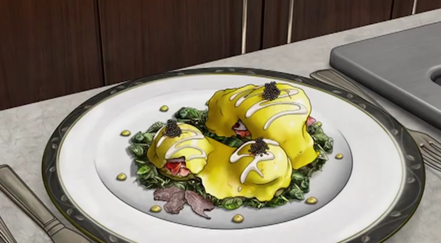

Eggs Woodhouse from Archer

Description
Eggs Woodhouse is the impossibly indulgent dish prepared for spoiled superspy Sterling Archer by his faithful
butler, Woodhouse. Will these decadent ingredients sing together in harmony outside the cartoon world?
Ingredients
For creamed spinach:
- A drizzle of olive oil
- 1 cup spinach
- 3 tbsp butter
- 3 tbsp flour
- ½ cup milk
- Salt and pepper
For hollandaise:
- 2 egg yolks
- Squeeze of lemon juice
- 1 stick melted butter
For Eggs Woodhouse:
- 2 warm artichoke hearts
- 2 eggs
- Sliced Ibérico ham
- Black truffle
- A sprinkle of paprika
- A sprinkle of kashmiri saffron
- A generous spoonful of beluga caviar (or white sturgeon caviar)
Steps
For creamed spinach:
- In a pan, heat olive oil over medium-high heat. Cook spinach until bright green and wilted.
- In a saucepan, melt butter over medium-high heat. Add flour and whisk until combined. Slowly whisk in
the milk. Continue whisking until the bechamel sauce thickens.
- Season the spinach with salt and pepper. Then, add the bechamel sauce and give it a good mix.
For hollandaise:
- In the bottom of an immersion blender cup, place egg yolks and squeeze lemon on top. Blend together.
- Slowly drizzle in melted butter and continue to blend until sauce formed.
For Eggs Woodhouse:
- Plate 2 artichoke hearts on a bed of creamed spinach.
- To poach eggs: In a pot, heat water over medium-high heat until almost boiling. In a mesh sieve, swirl eggs
before submerging them in the water. Keep the eggs moving and retrieve them after 3 ½ minutes. Place poached
eggs on top of the artichokes.
- Liberally stack Ibérico ham on top of the poached eggs. Shave black truffle on top of the ham. Pour warm
hollandaise over the entire dish.
- Top with a pinch of paprika and kashmiri saffron. Add a spoonful of caviar and enjoy.